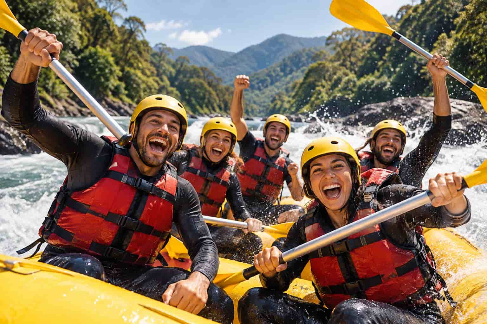

Nossa missão é proporcionar experiências de rafting seguras, emocionantes e inesquecíveis, conectando nossos clientes à natureza por meio da aventura, da diversão e do espírito de equipe. Buscamos oferecer atividades de qualidade para pessoas de diferentes níveis de experiência, sempre priorizando a segurança, o respeito ao meio ambiente e o atendimento aos nossos clientes. Queremos transformar cada descida pelo rio em uma oportunidade de superar desafios, criar boas lembranças e descobrir a beleza da natureza de uma maneira única e emocionante.